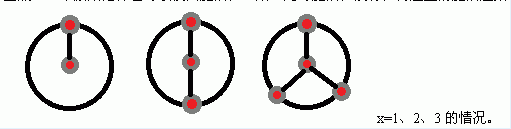
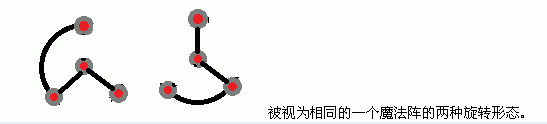
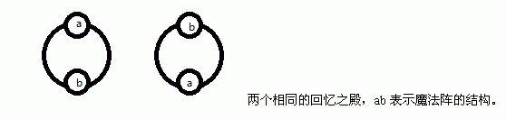

22世纪，3013年，在专制的统治和残酷的生存竞争下，回忆早已被人们所抛弃。本该有感情、有灵魂的人们已经彻底沦为统治者的血肉机器，如傀儡一般日夜工作着，如傀儡一般走向战场，如傀儡一般出生，也如傀儡一般死亡。
“……抛弃了回忆的人，是没有未来的。”
魔法结社，一群觉醒了意识的人们为了反抗霸权统治而组成的团体，致力于唤醒人们的灵魂。经过超过10年的努力，终于掌握了能够改变世界的终极魔法——回忆之殿。
秋，魔法结社的首席魔法师，将要启动回忆之殿。
回忆之殿由一个回路构成，回路上等距离地环状分布着m个结界。每个结界的中心是一个巨大的魔法柱，结界的周围由不超过n个魔法晶石等距离排列环绕而成。每个原始结界上的魔法晶石都和中间的魔法柱之间有魔法通路，同时也和相邻的魔法晶石之间有魔法通路（特别的，如果结界的周围只有1个魔法晶石，那么该魔法晶石有1条绕过魔法柱一圈并连向自己的魔法通路，如果结界的周围只有2个魔法晶石，那么这两个魔法晶石之间有2条魔法通路分别绕过魔法柱的两侧）。那么显然，由x个魔法晶石组成的原始结界有2x条魔法通路。当然，一个原始结界也可以仅由魔法柱组成，此时魔法柱没有任何连出的魔法通路。

对于成型的结界，中心的魔法柱和周围的每个魔法晶石之间都有且只有1条通路，也就是说，由x个魔法晶石组成的成型的结界是由原始结界中删除x条魔法通路，使结界成为一个“树形”连通结构形成，我们称这个连通结构为“魔法阵”。由于魔法晶石是环绕魔法柱分布的，所以两个魔法阵是不同的魔法阵，当且仅当其中一个魔法阵不能通过旋转的方式与另一个魔法阵相同。

回忆之殿的魔法一共需要启动t次，第i次启动需要布置一个由m个魔法阵总共i-1个魔法晶石构成的回路。同样的，由于回路是环状分布的，所以两个回忆之殿不同当且仅当其中一个回忆之殿的魔法阵不能通过旋转的方式与另一个回忆之殿对应魔法阵全部相同。

现在，在秋酱施展魔法之前，他想要知道，对于每一次启动回忆之殿，总共有几种可能的本质不同的魔法晶石布置方案满足条件，由于方案可能很多，只要输出答案模12289的结果就可以了。
“嗯~果然，还是不能忘记啊。”